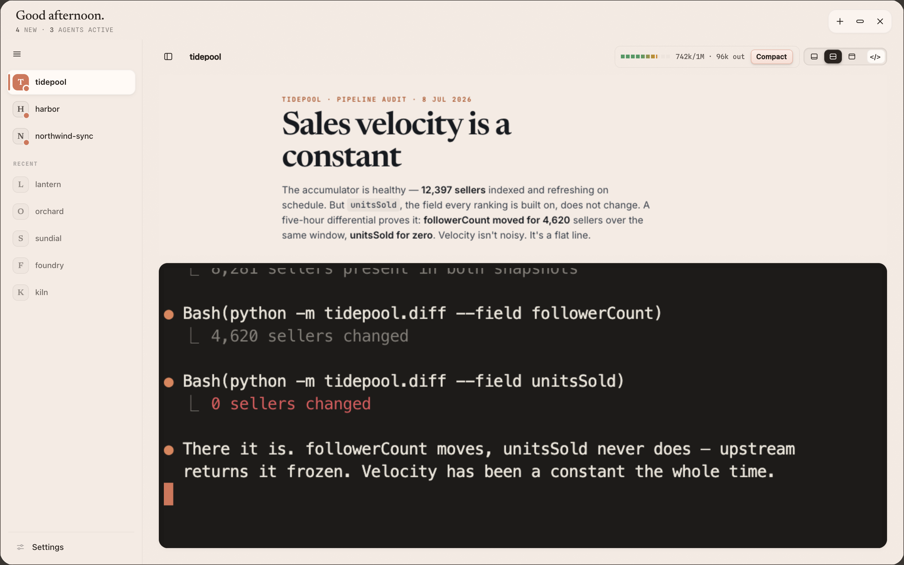
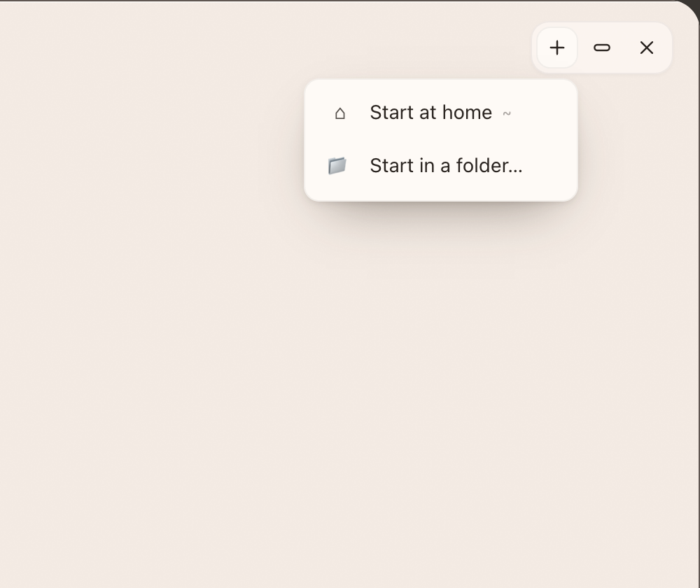
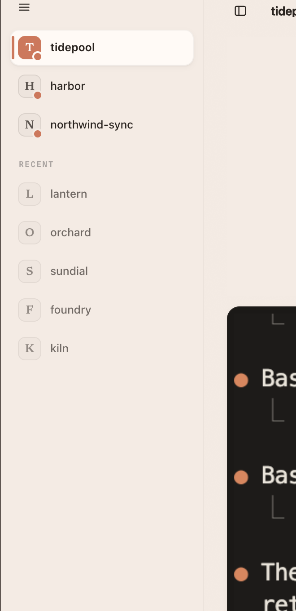
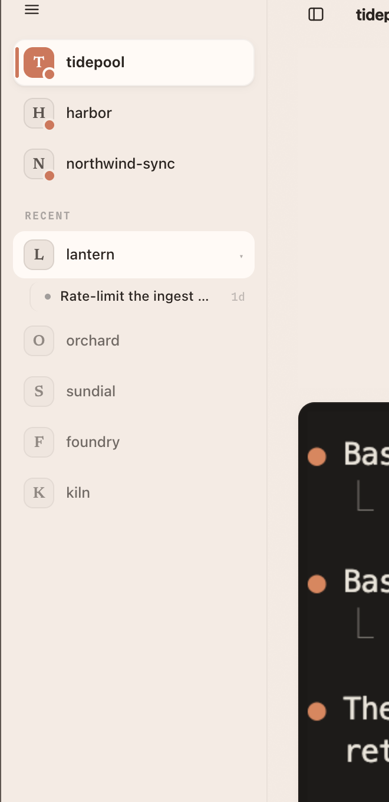
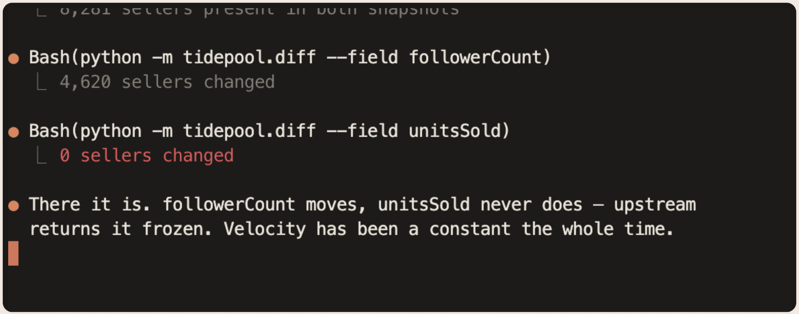
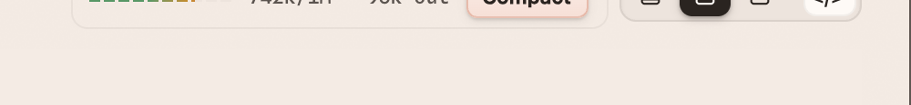

Your agents report here, and you answer here.
Shelly is a window that sits over your terminal. Your coding agent — Claude Code or Codex — writes each turn as a page instead of a wall of scrollback, and this window renders it the moment it's written. You read it, click your answer, and the agent keeps going. For most turns you never touch the terminal.

- 1The rail — every project you have an agent in. Live ones on top, recent ones below.
- 2The page — what the agent just did, and what it needs from you. Click ✓ / ✎ / ✗ to answer.
- 3The terminal — the real agent, running. It's right there whenever you want to type at it directly.
- 4The toolbar — how much of your 5-hour usage and context you've burned, and how the two panels are split.
That's it. The next five pages are just those four things, one at a time.
Start a session
Sessions run inside the app. Hit the + in the top-right corner and pick where the agent should work.

- Start in a folder… — pick your repo. This is what you want almost every time; the agent opens in that project and the project appears in the rail.
- Start at home — an agent in your home directory, for work that isn't tied to a repo.
Why it has to start here
By default Shelly only pays attention to terminals it started. If you run claude in
your own Terminal or iTerm, that session deliberately stays out of the app — so agents that aren't using
Shelly don't clutter it. If you'd rather every session get picked up wherever you launch it, run this
once:
shelly setup --external-terminals
Ending one
Each session's terminal has a ✕ in its controls — that ends the session. Closing the Shelly window does not kill your agents; they keep running and are still there when you come back.
Rename a session by clicking its title in the toolbar. Useful once you have three agents in one repo.
Where your sessions live
The rail on the left is the answer to "where did my agent go?" It holds projects, and a project holds sessions.


The ordering is the point
Projects are sorted by who needs a decision, not by when they last spoke. So the top of the rail is always where you should look next. Two agents in the same repo collapse into one card — you don't get two rows for one project.
The sidebar is in your way
Fine — collapse it. The toggle sits in the toolbar (it reads « to hide, » to bring it back), and it remembers your choice across restarts.
Answer without typing
The page your agent wrote is not a report you read and then go re-type a reply to. It's a form you answer in place. Everything the agent needs from you is a button.
The ✓ / ✎ / ✗ ballot
Every page ends with the next moves. For each one:
| Click | Means |
|---|---|
| ✓ | Do it. Go ahead with this. |
| ✎ | Not so fast — opens a box so you can say what to change. |
| ✗ | Skip it. |
Mark as many as you like, then hit Submit once. All your answers go back to the agent as a single instruction, and it gets on with it. There's a ✓ Do all button when you just agree with everything.
Talking back to one specific line
You don't have to accept a whole paragraph or nothing. Hover any paragraph and a 💬 appears in the margin — click it, type your question about that line, and it rides along with your next Submit, quoted, so the agent knows exactly what you're pointing at.
Or highlight any text and a small toolbar pops up: 💬 Ask pulls the quote into your reply, and ✦ New session spins up a fresh agent on that tangent so it doesn't derail the one you're in.
Try it right now, on this page. Hover this paragraph — see the 💬 in the left margin? That's the whole mechanic. This guide is itself a Shelly page, so anything you learn here you're already doing.
Where the pages go
They stack up per project — the newest is what you see, and the older ones stay in that project's history. Hit ⌘8 to flip back through everything an agent has ever handed you.
The terminal, and who gets the space
The agent's real terminal is always right there under the page. Click into it and type whenever the page isn't enough — a page is for deciding, the terminal is for getting into the weeds.

Give the page more room, or the terminal more room
Three buttons in the toolbar decide the split. This is the "make the artifact bigger" answer:

| Button | What it does |
|---|---|
| ⬒ | Page only — the terminal tucks away. |
| ⊟ | Split. The default: page on top, terminal below. |
| ⬓ | Terminal only — for when you're really in it. |
A tucked-away panel doesn't vanish; it leaves a small pill on the edge. Click the pill to bring it back to split.
The rest of the toolbar
- The usage meter — how much of your 5-hour window you've spent. Colours up as you approach the limit.
- The context count — how full this agent's memory is. When it's getting full, hit Compact and the agent summarises itself and carries on.
- </> — opens the code drawer: the actual files this session is touching, in a real editor.
Shortcuts, and what to do when it's quiet
The three you'll actually use
| macOS | Linux | |
|---|---|---|
| Show / hide the app | ⌘0 | Ctrl+Alt+0 |
| History of past pages | ⌘8 | Ctrl+Alt+8 |
| Free ↔ Terminal mode | ⌘9 | — |
Shelly also lives in your menu bar (or system tray). The icon shows how many agents are waiting on you, and the menu carries every shortcut as a clickable item — which is your fallback if a shortcut doesn't register.
Bring it forward from anywhere
From any terminal: shelly board.
Nothing is showing up
Run shelly doctor. It renders a health panel right here in the app — if you can see the panel, the whole pipeline works. The usual culprits, in order:
- You started the agent in your own terminal instead of from the app. See page 1 — either start it from the +, or turn on
shelly setup --external-terminals. - The plugin didn't update.
shelly setupre-wires it.
Want this guide back later? /shelly:help in any session.
Six pages, real screenshots, mechanics checked against board.ts rather than guessed. Nothing is
wired yet — this is the content for review. Tell me what's wrong and what to do next.
/shelly:help + fire on the empty state Next move